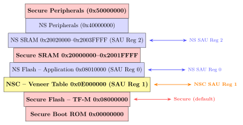
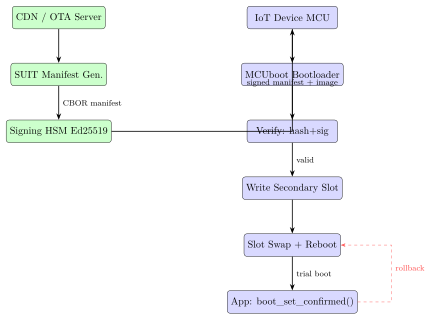

Chapter 20: IoT Hardware Security¶
Note: This chapter covers IoT hardware security: ARM TrustZone-M, PSA Certification, ATECC608B cryptographic coprocessor, MCUboot, SUIT (RFC 9019), LoRaWAN 1.1 security, ASCON (NIST 2023), DTLS 1.3, and EDHOC for constrained devices.
20.1 IoT Threat Landscape¶
The 2016 Mirai botnet infected 600,000+ IP cameras and home routers via default Telnet credentials, generating a 1.1 Tbps DDoS against Dyn DNS (October 21, 2016), taking down Twitter, Reddit, and GitHub. Shodan (shodan.io) continuously indexes millions of exposed IoT devices with no authentication. Mirai source release (October 2016) spawned: Satori, Reaper (2017), Moobot (2019)—all exploiting the same fundamental absence of device authentication and firmware update mechanisms.
Warning: NIST SP 800-213 mandates IoT devices must not use factory-default passwords
Warning: shared across same-model units. This single requirement would prevent most IoT botnets.
20.1.1 IoT Device Classification (IETF RFC 7228)¶
| Class | RAM | Flash | Examples |
|---|---|---|---|
| Class 0 | <10 KB | <100 KB | Passive sensors, RFID tags |
| Class 1 | 10 KB | 100 KB | TI CC2530, ATmega328P |
| Class 2 | 50 KB | 250 KB | Nordic nRF51822, CC1310 |
| Unconstrained | 256+ KB | 512+ KB | STM32L5, ESP32, nRF9160 |
20.1.2 IoT Security Challenges¶
-
Resource constraints: 64 KB RAM, 256 KB flash—TLS 1.3 requires 50–100 KB RAM.
-
No display: Cannot present certificates or security warnings to users.
-
OTA complexity: Firmware updates must be authenticated, rollback-protected, atomic.
-
Long lifecycle: Industrial IoT operates 10–20 years, outliving cipher suites.
-
Physical access: Field devices expose JTAG, UART, and fault injection interfaces.
-
Supply chain: Counterfeit or trojanized hardware in OEM supply chains.
20.2 IoT Platform Security Comparison¶
| Core | TrustZone | MPU/PMP | Crypto HW | PSA Level |
|---|---|---|---|---|
| Cortex-M0/M0+ | None | None | None | Not certified |
| Cortex-M23 | TrustZone-M (ARMv8-M.base) | 8 regions | Optional | Level 1 possible |
| Cortex-M33 | TrustZone-M (ARMv8-M.main) | 16 regions | Optional | Level 2 possible |
| Cortex-M55 | TrustZone-M + Helium | 16 regions | Helium SIMD | Level 2/3 |
| ESP32-S3 | None | None | AES-128/256, SHA | Not PSA |
| RISC-V (SiFive E21) | None | PMP 8–64 regions | Optional | Standard emerging |
20.3 ARM TrustZone-M (ARMv8-M)¶
TrustZone-M creates hardware-enforced isolation between Secure and Non-Secure worlds on Cortex-M23/M33/M55 without requiring a hypervisor. Managed by Trusted Firmware-M (TF-M).
20.3.1 SAU and IDAU¶
The SAU (Security Attribution Unit) provides up to 8 programmable regions: Secure (S), Non-Secure (NS), or Non-Secure Callable (NSC). The IDAU (Implementation Defined Attribution Unit) is a fixed vendor hardware structure. Effective attribution: most restrictive of SAU and IDAU wins.
-
Secure (S): Only Secure-state code can access. Contains TF-M, keys, secure SRAM.
-
Non-Secure (NS): Application code, accessible from both Secure and NS states.
-
NSC (Non-Secure Callable): Veneer functions with
SG(Secure Gateway) instruction—the only legal NS-to-Secure entry point (trampoline pattern).
20.3.2 CMSE Intrinsics¶
#include <arm_cmse.h>
#include "psa/crypto.h"
__attribute__((cmse_nonsecure_entry))
int32_t SE_GetRandom(uint8_t *ns_buf, uint32_t length) {
if (!cmse_check_address_range(ns_buf, length,
CMSE_MPU_READWRITE | CMSE_NONSECURE))
return PSA_ERROR_INVALID_ARGUMENT;
return (int32_t)psa_generate_random(ns_buf, length);
}
typedef int32_t (*SE_GetRandom_t)(uint8_t*, uint32_t)
__attribute__((cmse_nonsecure_call));
SE_GetRandom_t fn = (SE_GetRandom_t)cmse_nsfptr_create(veneer_addr);
fn(buffer, 32); /* HW clears registers before crossing */
20.3.3 SAU Configuration Code¶
void SAU_Init(void) {
SAU->CTRL = 0;
SAU->RNR=0; SAU->RBAR=0x08010000U; SAU->RLAR=0x0807FFE0U|SAU_RLAR_ENABLE_Msk;
SAU->RNR=1; SAU->RBAR=0x0E000000U; SAU->RLAR=0x0E00FFE0U|SAU_RLAR_NSC_Msk|SAU_RLAR_ENABLE_Msk;
SAU->RNR=2; SAU->RBAR=0x20020000U; SAU->RLAR=0x2003FFE0U|SAU_RLAR_ENABLE_Msk;
SAU->CTRL = SAU_CTRL_ENABLE_Msk;
__DSB(); __ISB();
}
20.3.4 TrustZone-M Memory Map Diagram¶

SG instruction.20.4 PSA Platform Security Architecture¶
ARM PSA defines threat modeling, hardware requirements, and certification for IoT devices.
| Level | Requirements | Evaluation | Example |
|---|---|---|---|
| Level 1 | Security questionnaire, design review | Lab questionnaire | Nordic nRF9160 |
| Level 2 | RoT isolation, secure boot, PSA Crypto | Independent lab | STM32L552, LPC55S69 |
| Level 3 | Side-channel resistance, high-value assets | Penetration test | EFR32MG21 Secure Vault |
/* PSA Crypto API (TF-M Crypto partition, psa/crypto.h) */
psa_key_attributes_t attr = PSA_KEY_ATTRIBUTES_INIT;
psa_set_key_type(&attr, PSA_KEY_TYPE_ECC_KEY_PAIR(PSA_ECC_FAMILY_SECP_R1));
psa_set_key_bits(&attr, 256);
psa_set_key_usage_flags(&attr, PSA_KEY_USAGE_SIGN_HASH|PSA_KEY_USAGE_VERIFY_HASH);
psa_set_key_algorithm(&attr, PSA_ALG_ECDSA(PSA_ALG_SHA_256));
psa_set_key_lifetime(&attr, PSA_KEY_LIFETIME_PERSISTENT);
psa_set_key_id(&attr, 0x00000001U);
psa_key_id_t key_id;
psa_generate_key(&attr, &key_id); /* private key stays in Secure world */
/* PSA Initial Attestation -- EAT/CBOR/COSE_Sign1 token */
uint8_t challenge[32], token[512]; size_t token_len;
psa_initial_attest_get_token(challenge, 32, token, 512, &token_len);
/* PSA Protected Storage */
psa_ps_set(0x00000001UL, cert_len, device_cert, PSA_STORAGE_FLAG_WRITE_ONCE);
20.5 ATECC608B IoT Cryptographic Coprocessor¶
Microchip ATECC608B (TDFN-8, I2C addr 0x60–0x6F configurable via fuses): ECC P-256 (ECDH + ECDSA), AES-128, SHA-256/HMAC, 16 key slots x 256-bit, per-slot access control, monotonic counters, NIST SP 800-90A TRNG.
#include "cryptoauthlib.h"
ATCAIfaceCfg cfg = cfg_ateccx08a_i2c_default;
cfg.atcai2c.slave_address = 0xC0; /* 0x60 << 1 for I2C write addr */
atcab_init(&cfg);
uint8_t pub_xy[64]; /* raw X||Y, P-256 */
atcab_genkey(2, pub_xy); /* generate ephemeral in slot 2 */
uint8_t shared[32];
atcab_ecdh(2, server_pubkey_xy, shared); /* feed into HKDF */
uint8_t digest[32], sig[64];
atcab_sha(data, data_len, digest);
atcab_sign(0, digest, sig); /* slot 0: device identity (never exported) */
bool ok;
atcab_verify_extern(digest, partner_sig, ca_pubkey, &ok);
Tip: Lock ATECC608B Config Zone after provisioning. Slots: 0=device ECDSA (never exported), 1-3=ECDH ephemeral, 4-7=AES keys, 8-11=CA pubkeys, 14-15=monotonic counters.
20.6 MCUboot Secure Bootloader¶
MCUboot (https://github.com/mcu-tools/mcuboot) is the standard open-source bootloader for Zephyr RTOS, Apache Mynewt, NuttX, and ESP-IDF.
-
Overwrite: Copy secondary to primary. Simple but no rollback.
-
Swap (move): Atomic sector-by-sector swap via scratch area. Rollback supported.
-
Direct-XIP: Execute in place from either slot. No copy needed.
# prj.conf: MCUboot with Ed25519 signing (Zephyr RTOS)
CONFIG_MCUBOOT=y
CONFIG_BOOT_SIGNATURE_TYPE_ED25519=y
CONFIG_BOOT_SIGNATURE_KEY_FILE="keys/sign.pem"
CONFIG_BOOT_MAX_IMG_SECTORS=256
CONFIG_BOOT_SWAP_USING_MOVE=y
# Key generation
python -m imgtool keygen -k keys/sign.pem -t ed25519
python -m imgtool getpub -k keys/sign.pem > keys/sign_pub.c
# Sign application image
python -m imgtool sign
--key keys/sign.pem --header-size 0x200 --align 4
--version 1.2.0+0 --slot-size 0x67000
zephyr.bin zephyr_signed.bin
# Verify signed image offline
python -m imgtool verify --key keys/sign_pub.pem zephyr_signed.bin
Image layout: [512B header | application code | TLV trailer]. TLV: HASH (SHA-256 of header+code), KEYHASH (SHA-256 of signing pubkey), SIG (Ed25519 signature of HASH). Trial boot: UNCONFIRMED until boot_set_confirmed() called.
20.7 SUIT: Software Update for IoT (RFC 9019)¶
SUIT defines CBOR-encoded manifests with COSE authentication wrappers for IoT OTA.
# Python SUIT manifest generation (pip install suit-tool)
import json, subprocess
manifest = {
"manifest-version": 1,
"manifest-sequence-number": 42, # anti-replay
"components": [{
"component-identifier": ["firmware"],
"install-digest": {
"algorithm-id": "sha-256",
"digest-bytes": "AABBCCDD..."},
"install-size": 131072,
"source-uri": "https://ota.example.com/fw_v2.bin"
}]
}
with open("manifest.json","w") as f: json.dump(manifest,f)
subprocess.run(["suit-tool","create","-i","manifest.json","-o","manifest.suit"])
subprocess.run(["suit-tool","sign","-m","manifest.suit","-k","p256.pem","-o","signed.suit"])
20.8 LoRaWAN 1.1 Security¶
LoRaWAN 1.1 uses dual-key architecture: AppKey (application root) and NwkKey (network root), separating application provider and network operator security domains.
| Key | Root Key | Purpose |
|---|---|---|
| AppSKey | AppKey + JoinNonce + NetID + DevNonce | AES-128-CTR payload encryption |
| FNwkSIntKey | NwkKey + JoinNonce + ... | Uplink MIC (AES-128-CMAC) |
| SNwkSIntKey | NwkKey + ... | Downlink MIC |
| NwkSEncKey | NwkKey + ... | FOpts MAC encryption |
from Crypto.Hash import CMAC
from Crypto.Cipher import AES
def lorawan_mic_uplink(FNwkSIntKey, DevAddr, FCnt, frame):
B0 = bytes([0x49])
B0 += (0).to_bytes(2, "little") # ConfFCnt=0
B0 += bytes([0x00, 0x00]) # TxDr, TxCh
B0 += bytes([0x00]) # Dir=0 (uplink)
B0 += DevAddr.to_bytes(4, "little")
B0 += FCnt.to_bytes(4, "little")
B0 += bytes([0x00]) # padding
B0 += len(frame).to_bytes(1, "big")
c = CMAC.new(FNwkSIntKey, ciphermod=AES)
c.update(B0 + frame)
return c.digest()[:4] # MIC = first 4 bytes
20.9 ASCON Lightweight Cipher (NIST Standard 2023)¶
ASCON (NIST IR 8454, August 2023) is the NIST lightweight cryptography standard. State: 320 bits (5 x 64-bit words). Rate: 64 bits (Ascon-128) / 128 bits (Ascon-128a). Key and nonce: 128 bits each. Tag: 128 bits. Hardware area: 2,300 GE vs AES 3,400 GE.
def rotr64(x,n): return ((x>>n)|(x<<(64-n)))&0xFFFFFFFFFFFFFFFF
def ascon_permutation(S, rounds):
RC=[0xf0,0xe1,0xd2,0xc3,0xb4,0xa5,0x96,0x87,0x78,0x69,0x5a,0x4b]
for r in range(12-rounds,12):
S[2]^=RC[r] # add round constant
S[0]^=S[4]; S[4]^=S[3]; S[2]^=S[1] # S-box layer
T=[(~S[i]&0xFFFFFFFFFFFFFFFF)&S[(i+1)
for i in range(5): S[i]^=T[(i+1)
S[1]^=S[0]; S[0]^=S[4]; S[3]^=S[2]; S[2]^=0xFFFFFFFFFFFFFFFF
S[0]^=rotr64(S[0],19)^rotr64(S[0],28) # linear diffusion
S[1]^=rotr64(S[1],61)^rotr64(S[1],39)
S[2]^=rotr64(S[2],1)^rotr64(S[2],6)
S[3]^=rotr64(S[3],10)^rotr64(S[3],17)
S[4]^=rotr64(S[4],7)^rotr64(S[4],41)
Tip: Ascon-128: 1.45 cycles/byte on Cortex-M3 SW vs 10+ for AES-CCM SW. For M0/M0+ without HW AES, Ascon is the preferred IoT cipher. Hardware GE: 2300 vs AES-128 at 3400.
20.10 DTLS 1.3 and EDHOC for Constrained Devices¶
DTLS 1.3 (RFC 9147) brings TLS 1.3 security to UDP-based IoT (CoAP). EDHOC (RFC 9528) provides a 3-message key exchange in 150–300 bytes.
| Protocol | Handshake (bytes) | RAM (bytes) | Notes |
|---|---|---|---|
| TLS 1.3 (mbedTLS 3.x) | 8,000 | 50,000 | TCP; full stack |
| DTLS 1.3 (wolfSSL) | 6,000 | 35,000 | UDP; CoAP transport |
| EDHOC + OSCORE (RFC 9528) | 150 | 5,000 | Minimal 3-message DH |
| PSK-DTLS 1.3 | 1,200 | 15,000 | Pre-shared key mode |
20.11 TLS Libraries for MCUs¶
| Library | Flash (KB) | RAM (KB) | License | HW Accel |
|---|---|---|---|---|
| mbedTLS 3.x | 60–150 | 50–100 | Apache 2.0 | PSA Crypto API |
| wolfSSL 5.x | 20–100 | 12–50 | GPL/Commercial | wolfCrypt drivers |
| TinyCrypt | 6–20 | 2–8 | BSD | None |
| BearSSL | 45 | 6–20 | MIT | None |
20.12 Target Hardware for IoT Security¶
20.12.1 STM32L552 (ARM Cortex-M33, PSA Level 2)¶
STMicroelectronics STM32L552ZE: 110 MHz Cortex-M33 + TrustZone-M, FPU, MPU (16 regions). Memory: 512 KB dual-bank flash (configurable S/NS partition), 256 KB SRAM. Security: PKA (ECC P-256/P-521, RSA-4096), AES-256, SHA-256/384, HW RNG (NIST 800-90A), TAMP module (tamper detection), OTFDEC (on-the-fly AES decryption of NS flash). PSA Certified Level 2. Eval: NUCLEO-L552ZE-Q ($5).
20.12.2 Nordic nRF9160 (LTE-M/NB-IoT)¶
64 MHz Cortex-M33 + TrustZone-M. Integrated LTE-M/NB-IoT modem + GNSS SiP. 1 MB flash, 256 KB RAM. ARM CryptoCell-310 (AES-128, SHA-256, ECC P-256). PSA Certified Level 1. Eval: nRF9160 DK ($9, Nordic Semiconductor).
20.12.3 NXP LPC55S69 (TrustZone-M + PUF)¶
Dual Cortex-M33 at 150 MHz. 640 KB flash, 320 KB SRAM. CASPER coprocessor (RSA-4096, ECC P-256), PRINCE (AES-128 on-the-fly flash encryption), SRAM PUF (physically unclonable function for key derivation). PSA Certified Level 2. Eval: LPC55S69-EVK ($2, NXP).
20.12.4 Silicon Labs EFR32MG21 (Secure Vault, PSA Level 3)¶
80 MHz Cortex-M33, BLE 5.2 + IEEE 802.15.4 (Thread, Zigbee). Secure Vault: dedicated hardware security subsystem physically isolated from app core, DPA-resistant cryptographic engines, active anti-tamper mesh, key wrapping with device-unique master key generated from PUF at first boot. PSA Certified Level 3. Eval: BRD4181A radio board ($5 with WSTK Starter Kit).
20.13 FPGA and ASIC IoT Security¶
| IP Core | LUTs | FFs | BRAMs | Freq (MHz) |
|---|---|---|---|---|
| AES-128 (encrypt only) | 820 | 340 | 0 | 185 |
| AES-256-GCM | 1,450 | 680 | 2 | 155 |
| SHA-256 | 620 | 280 | 0 | 210 |
| ECDSA P-256 | 8,200 | 3,100 | 4 | 95 |
| Ascon-128 | 380 | 220 | 0 | 250 |
Microchip SmartFusion2 (M2S090T): flash FPGA + ARM Cortex-M3 + CPE. SONOS flash process retains bitstream after power-off (unlike SRAM FPGAs needing external config). Lattice iCE40UP5K: <75 uW standby, no built-in security; pair with ATECC608B.
| Device | Process | Interface | Crypto | Cert |
|---|---|---|---|---|
| NXP EdgeLock SE050 | 40 nm | I2C/SPI | ECC-521, RSA-4096, AES-256 | CC EAL6+ |
| STMicro STSAFE-A110 | 40 nm | I2C | ECC P-256, AES-128 | CC EAL5+ |
| Infineon OPTIGA Trust M | 40 nm | I2C | ECC P-256, RSA-2048 | CC EAL6+ |
| SL Secure Vault | 55 nm | On-chip | ECC, AES-256, DPA-resist | PSA L3 |
| Infineon PSoC64 | 40 nm | On-chip | Cortex-M4+M0+, AES | PSA L2 |
20.14 Secure Provisioning Flow¶
-
HSM key generation: Thales Luna or Utimaco HSM generates per-device ECC P-256 keypair.
-
Encrypted injection: ST STSDK or NXP SPSDK transfers key material over authenticated session.
-
Certificate enrollment: Device generates on-chip CSR; provisioning CA (in HSM) signs.
-
Cloud onboarding: AWS IoT Core DPS or Azure IoT Hub DPS validates cert on first connection.
-
Lifecycle lock: RDP Level 2 programmed, JTAG/SWD disabled permanently at end of manufacturing.
20.15 IoT OTA Update Architecture¶

20.16 All Solutions Comparison¶
| Solution | Type | Target | Key Feature |
|---|---|---|---|
| ARM TF-M + PSA Cert. | Open+cert | Cortex-M33/M23 | PSA APIs, TrustZone-M |
| MCUboot | Open-source | Any Cortex-M | Ed25519 sign, rollback |
| SUIT manifest tool | Open-source | Any MCU | RFC 9019, CBOR, COSE |
| ATECC608B | Commercial chip | I2C coprocessor | ECC+AES+RNG, Microchip |
| NXP EdgeLock SE050 | Commercial chip | I2C/SPI | CC EAL6+ |
| SL Secure Vault | Commercial SoC | EFR32 series | PSA L3, DPA-resist |
| STMicro STSAFE-A110 | Commercial chip | I2C slave | CC EAL5+ |
| Infineon OPTIGA Trust M | Commercial chip | I2C slave | CC EAL6+ |
| Infineon PSoC64 | Commercial SoC | Cortex-M4+M0+ | PSA Level 2 |
| Nordic nRF9160 TZ | Commercial SoC | LTE-M/NB-IoT | CryptoCell-310 |
| wolfSSL 5.x | Open-source lib | Any MCU | FIPS 140-3, dual-license |
| mbedTLS 3.x | Open-source lib | Any MCU | Apache 2.0, PSA Crypto |
| TinyCrypt | Open-source lib | Cortex-M0+ | 6–20 KB footprint |
| OpenThread | Open stack | 802.15.4 MCUs | Thread Group, MeshCOP |
| Matter (CHIP 1.3) | Open stack | BLE/Thread/WiFi | CSA, PASE/CASE |
| AWS IoT Greengrass | Cloud + edge | Lambda on edge | Mutual TLS, X.509 |
| Azure IoT Hub DPS | Cloud provision | Any device | Zero-touch provisioning |
20.17 Solved Problems¶
Solved Problem: TrustZone-M SAU Configuration for STM32L552
Given STM32L552: Secure TF-M at 0x08000000–0x0800FFFF (64 KB), NSC veneer at 0x0E000000–0x0E00FFFF (64 KB), NS app at 0x08010000–0x0807FFFF (448 KB), NS SRAM at 0x20020000–0x2003FFFF (128 KB). Write the complete SAU configuration and verify access control. Solution: Step 1: Identify SAU entries.
SAU only marks NS and NSC regions; Secure is the default for all other space. Required: SAU[0]=NS flash, SAU[1]=NSC veneer, SAU[2]=NS SRAM.
Step 2: RBAR and RLAR values.
SAU[0]: RBAR=0x08010000, RLAR=0x0807FFE0|0x01=0x0807FFE1 (NS, enable)
SAU[1]: RBAR=0x0E000000, RLAR=0x0E00FFE0|0x03=0x0E00FFE3 (NSC, enable)
SAU[2]: RBAR=0x20020000, RLAR=0x2003FFE0|0x01=0x2003FFE1 (NS, enable)
Step 3: C implementation.
void SAU_Init(void) {
SAU->CTRL=0;
SAU->RNR=0; SAU->RBAR=0x08010000U; SAU->RLAR=0x0807FFE1U;
SAU->RNR=1; SAU->RBAR=0x0E000000U; SAU->RLAR=0x0E00FFE3U;
SAU->RNR=2; SAU->RBAR=0x20020000U; SAU->RLAR=0x2003FFE1U;
SAU->CTRL=SAU_CTRL_ENABLE_Msk;
__DSB(); __ISB();
}
Step 4: Verification.
NS -> 0x08000000 (S TF-M): SecureFault
NS -> 0x0E000100 via SG: Switch to Secure state (allowed)
S -> 0x20020000 (NS SRAM): Allowed (Secure can access NS)
NS -> 0x20000000 (S SRAM): SecureFault
Solved Problem: LoRaWAN 1.1 MIC Verification Step-by-Step
LoRaWAN 1.1 uplink: MHDR=0x40, DevAddr=0xABCD1234, FCnt=5, frame=[0x40,0x34,0x12,0xCD,0xAB,0x00,0x05,0x00]. FNwkSIntKey=16 zero bytes. Received MIC=0xAABBCCDD. Is the frame valid? Solution: Step 1: Construct B0 block (16 bytes).
B0[0]=0x49 block type indicator
B0[1:2]=0x00 0x00 ConfFCnt=0 (unconfirmed uplink)
B0[3]=0x00 TxDr=0, B0[4]=0x00 TxCh=0
B0[5]=0x00 Dir=0 (uplink)
B0[6:9]=34 12 CD AB DevAddr little-endian
B0[10:13]=05 00 00 00 FCnt=5 little-endian
B0[14]=0x00 padding
B0[15]=0x08 len(frame)=8 bytes
Step 2: Compute AES-128-CMAC.
Input = B0 (16 bytes) || frame (8 bytes) = 24 bytes total. CMAC-AES-128(key=16x0x00, B0||frame). MIC = first 4 bytes of output.
Step 3: Compare.
Computed MIC differs from received 0xAABBCCDD. REJECT. Frame dropped silently (no error response, avoids oracle). Possible causes: wrong FNwkSIntKey, replay (FCnt mismatch), or payload tampering.
Solved Problem: MCUboot Image Signing and Verification Process
Describe the complete MCUboot Ed25519 workflow: key generation, prj.conf configuration, imgtool invocation, image format, and boot-time verification including rollback protection. Solution: Step 1: Key generation.
python -m imgtool keygen -k sign.pem -t ed25519
python -m imgtool getpub -k sign.pem > sign_pub.c
# sign_pub.c compiled into MCUboot binary
Step 2: prj.conf.
CONFIG_BOOT_SIGNATURE_TYPE_ED25519=y
CONFIG_BOOT_SIGNATURE_KEY_FILE="sign.pem"
CONFIG_BOOT_SWAP_USING_MOVE=y
Step 3: Sign image.
python -m imgtool sign --key sign.pem --header-size 0x200 --align 4
--version 1.2.0+0 --slot-size 0x67000
zephyr.bin zephyr_signed.bin
# Layout: [512B header | app code | TLV: HASH+KEYHASH+SIG]
Step 4: Boot-time verification.
1. Check header magic (0x96F3B83D)
2. SHA-256(header+app) vs TLV HASH entry
3. Verify TLV SIG (Ed25519) vs embedded pubkey
4. Check version >= minimum (anti-rollback)
5. Swap secondary->primary, set UNCONFIRMED, reboot
6. App calls boot_set_confirmed() OR MCUboot reverts
Solved Problem: PSA Certified Level 2 Requirements for STM32L552
A product team targets PSA Certified Level 2 on STM32L552. Map each mandatory PSA Level 2 requirement to the specific STM32L552 hardware or TF-M software feature that satisfies it. Solution: Requirement mapping:
-
Verified Boot (RQ_A_SECBOOT): MCUboot Ed25519. TZEN=1 option byte.
-
Crypto (RQ_A_CRYPTO): STM32L5 PKA+AES+SHA via TF-M Crypto partition PSA API.
-
Secure Storage (RQ_A_STORAGE): TF-M ITS (Secure SRAM) + TF-M PS (AES-256-GCM).
-
Attestation (RQ_A_ATTEST): TF-M Initial Attestation (EAT/CBOR/COSE_Sign1).
-
Isolation: SAU + IDAU + MPU via TF-M firmware configuration.
-
Lifecycle: STM32L5 RDP 0/1/2 + TF-M lifecycle CSR states.
-
Debug control: RDP Level 2 disables JTAG/SWD permanently.
Certification: Submit to accredited lab (Riscure, Brightsight). Architecture review + TF-M source review + basic fault injection test. Certificate valid 3 years.
20.18 Recent Developments (2024–2026)¶
IoT hardware security has matured significantly, driven by new protocol standards, updated certification schemes, and major regulatory mandates.
20.18.1 Matter 1.2/1.3 (2023–2024): Hardware Security Requirements¶
The Connectivity Standards Alliance (CSA) released Matter 1.2 (October 2023) and Matter 1.3 (May 2024), adding hardware security requirements beyond the original Matter 1.0 specification. Matter mandates a Device Attestation Certificate (DAC) stored in a Secure Element or equivalent tamper-resistant hardware; the DAC private key must be generated on-chip and never exported. The attestation flow uses CASE (Certificate-Authenticated Session Establishment) with ECDSA P-256, with the Device Attestation public key certified by the vendor’s Product Attestation Intermediate (PAI) certificate.
Matter 1.2 added nine new device categories (refrigerators, robot vacuums, smoke detectors, etc.) and reinforced that each must carry a hardware-protected DAC. Matter 1.3 introduced Enhanced Setup Code for NFC-based commissioning and Device Energy Management (DEM) with security bindings to prevent unauthorised energy schedule modifications. Thread 1.3 (the underlying mesh protocol) now requires hardware-backed Operational Credentials.
| Matter Security Element | Hardware Requirement | Storage |
|---|---|---|
| Device Attestation Certificate | On-chip generation, no export | SE / OTP |
| DAC Private Key | CC EAL5+ or equivalent | SE NVM |
| Node Operational Certificate | Rotatable per fabric | SE or PSA L2 |
| PASE Passcode | Printed QR / NFC tag | Non-secure storage OK |
| CASE Session Keys | Ephemeral (ECDH) | Transient SRAM |
20.18.2 PSA Certified Level 3 (2023): New Evaluation Methodology¶
Arm PSA Certified Level 3 received a revised methodology in 2023, adding mandatory physical attack testing to the existing architectural and implementation reviews. Level 3 evaluations now require:
-
Resistance to non-invasive side-channel analysis (DPA, EM analysis) on cryptographic operations—the first PSA level to mandate physical testing.
-
Resistance to fault injection attacks (voltage/clock glitching, laser FI) on security-critical code paths (PIN verification, boot verification).
-
An independently accredited laboratory (e.g., Riscure, Brightsight, CESTI) must perform the penetration testing phase.
Silicon Labs EFR32MG21 Secure Vault High and Nordic nRF5340 achieved PSA Certified Level 3 under the revised methodology in 2023. The evaluation scope explicitly covers the secure enclave’s cryptographic engines and the secure boot chain.
20.18.3 EU Cyber Resilience Act (CRA 2024): IoT Hardware Security Mandates¶
The EU Cyber Resilience Act was formally adopted in 2024 (Regulation 2024/2847), entering into force with a 36-month transition period. The CRA imposes mandatory cybersecurity requirements on all hardware and software products with digital elements sold in the EU. For IoT devices, the key hardware-level requirements include:
-
Secure by default: No universal default passwords; credentials must be unique per device or generated on first use.
-
Unique device identity: Each device must have a hardware-rooted cryptographic identity (e.g., X.509 certificate backed by a secure element).
-
Secure update mechanism: OTA updates must be authenticated and integrity-checked; rollback to vulnerable firmware must be prevented.
-
Vulnerability disclosure: Manufacturers must report actively exploited vulnerabilities to ENISA within 24 hours.
-
Class I devices (standard IoT): Self-assessment conformity. Class II devices (critical, e.g., industrial gateways): Third-party conformity assessment mandatory.
Note: The CRA explicitly references ETSI EN 303 645 and NIST IR 8259 as candidate technical standards. IoT manufacturers targeting the EU market must align hardware designs with these requirements by 2027.
20.18.4 NIST IR 8259D: IoT Device Cybersecurity Profile for Enterprise (2023)¶
NIST IR 8259D (Profile Using the IoT Core Baseline for the Industrial Internet of Things) was published in 2023 as a companion to the foundational IR 8259A. It defines security capability baselines for enterprise IoT deployments, with hardware- specific requirements including:
-
Device identity: Hardware-rooted unique identifier (UID) that is immutable and cryptographically bound to device certificates.
-
Cryptographic key protection: Private keys must reside in hardware- protected storage (HSM, SE, or TPM) inaccessible via software interfaces.
-
Physical access protection: Anti-tamper mechanisms that zeroize keys upon case opening (relevant for Class II industrial IoT).
-
Software update integrity: Hardware-verified signature check before any firmware is applied; rollback counter enforced in hardware.
20.18.5 RP2350 (Raspberry Pi Pico 2, 2024): Dual-Architecture Security¶
The RP2350 (announced August 2024) introduces a dual-architecture design: two ARM Cortex-M33 cores and two RISC-V Hazard3 cores (only one architecture active at a time, selected at boot). Security features represent a major step beyond the RP2040:
-
ARM TrustZone-M: Full TrustZone-M support on the Cortex-M33 cores, enabling secure/normal world isolation as described in this chapter.
-
OTP (One-Time Programmable) memory: 4096 bits of on-chip OTP for key storage, boot configuration, and lock bits. The OTP includes an error correction code (ECC) engine.
-
Secure Boot: Hardware boot signature verification using an ECC P-256 key hash stored in OTP; unsigned firmware is rejected when secure boot is enabled.
-
GLITCH DETECTORS: Voltage glitch detection circuitry that triggers a system reset, mitigating fault injection attacks that were trivially effective on the RP2040.
-
RISC-V security: When booting in RISC-V mode (Hazard3 cores), the PMP (Physical Memory Protection) unit provides memory isolation analogous to TrustZone-M.
Tip: RP2350’s dual-architecture capability enables interesting use cases: ARM Cortex-M33 with TrustZone-M can run the secure world, while RISC-V Hazard3 cores run the normal world application. The architecture selection is fixed at boot time by an OTP bit.
20.18.6 ESP32-S3 Secure Boot v2 and Flash Encryption Improvements¶
Espressif Systems updated the ESP32-S3 security subsystem in 2023 with Secure Boot v2 enhancements. Secure Boot v2 uses RSA-3072 with PSS padding (replacing the older ECDSA-based scheme) for firmware image verification, with the public key digest stored in eFuse. Up to three public keys can be enrolled simultaneously, enabling key rotation without hardware access: if a signing key is compromised, the corresponding eFuse digest bit is revoked, and the next enrolled key takes over. Flash encryption improvements include support for XTS-AES-256 (versus the previous XTS-AES-128), with the encryption key stored in a dedicated eFuse key block that is inaccessible after eFuse programming with the DIS_DOWNLOAD_ICACHE and DIS_DOWNLOAD_DCACHE fuses set.
20.18.7 Nordic nRF9160/nRF5340 PSA Certified Certification¶
Nordic Semiconductor received PSA Certified Level 2 for the nRF9160 (LTE-M/NB-IoT SiP) and nRF5340 (dual Arm Cortex-M33 SoC) in 2023 under the revised PSA Certified Methodology v3.0. The nRF5340’s dual-core architecture—a 128 MHz application core (Cortex-M33) and a 64 MHz network core (Cortex-M33)—maps naturally to PSA’s isolation model: the application core runs TF-M (Trusted Firmware-M) in the secure world, while the network core handles radio protocol stacks in isolation. The CryptoCell-312 hardware cryptographic accelerator (AES-128, SHA-256, ECC P-256, TRNG) is accessible only from the secure world, satisfying the PSA Level 2 requirement for hardware-isolated cryptographic services.
| Platform | MCU | PSA Level | Key Security Features |
|---|---|---|---|
| RP2350 (Pico 2, 2024) | Dual Cortex-M33 + dual RISC-V | Level 1 capable | TrustZone-M, OTP, glitch detect |
| ESP32-S3 (2023 update) | Xtensa LX7 | Not PSA | Secure Boot v2, XTS-AES-256 |
| Nordic nRF5340 | Dual Cortex-M33 | Level 2 | CryptoCell-312, TF-M |
| Nordic nRF9160 | Cortex-M33 | Level 1 | CryptoCell-310, LTE-M |
| SL EFR32MG21 Secure Vault | Cortex-M33 | Level 3 | DPA-resist, anti-tamper mesh |
Exercises
-
(MCQ) In ARM TrustZone-M NSC region, which instruction switches from Non-Secure to Secure state? (a)
BLX, (b)SG, (c)SMC, (d)SVC. -
(MCQ) LoRaWAN 1.1 encrypts the application payload using which session key? (a) NwkKey, (b) FNwkSIntKey, (c) AppSKey, (d) NwkSEncKey.
-
(Short Answer) Explain the difference between SAU and IDAU in TrustZone-M. What is the effective attribution when SAU marks a region NS but IDAU marks it Secure?
-
(Short Answer) Describe the MCUboot trial boot mechanism. What happens if the application never calls
boot_set_confirmed()before the next watchdog reset? -
(Design) Design a PSA-compliant secure provisioning flow for 100,000 IoT devices: HSM key generation, encrypted key injection, certificate enrollment, cloud zero-touch provisioning. Address security guarantees if a device is stolen during shipping.
-
(Design) A LoRaWAN 1.0.x deployment uses a single AppKey. List the specific attacks this enables and explain how LoRaWAN 1.1 dual-key architecture closes each vulnerability.
-
(Coding) Write a C function with
cmse_nonsecure_entrythat validates an NS buffer, performs AES-256-GCM encryption via PSA Crypto API using persistent key ID 0x1, and writes ciphertext + 16-byte tag to the NS caller buffer. -
(Coding) Write a Python script using cbor2 and pycose to generate a SUIT RFC 9019 manifest: firmware v2.1.0, SHA-256 image digest, sequence number 42, HTTPS fetch URI, COSE_Sign1 signed with ECDSA-P256.
-
(Analysis) Design an ATECC608B (16 slots x 256-bit) slot assignment for a TLS 1.3 mutual-auth IoT client: device ECDSA identity key, ECDH ephemeral, CA public key, AES-128 session key, anti-replay counter. Specify read/write/auth policy for each slot.
-
(Analysis) Compare Ascon-128 (10 cy/B SW) vs AES-128-CCM (55 cy/B SW) on a 16 MHz Cortex-M0+. Calculate CPU load for 100-byte CoAP payloads per second. At what frequency does AES-CCM exceed 80% CPU load?
-
(Research) EFR32MG21 Secure Vault achieves PSA Level 3 via DPA resistance. Explain: (a) what physical quantities DPA measures, (b) how hardware masking counters DPA, (c) why TrustZone-M isolation alone cannot achieve Level 3.
-
(Design) Design a complete Matter 1.3 security architecture for a smart thermostat: DAC, PAI, CD, PASE commissioning, CASE session establishment, OTA with SUIT. Specify hardware for each element, factory provisioning flow, and security guarantee.